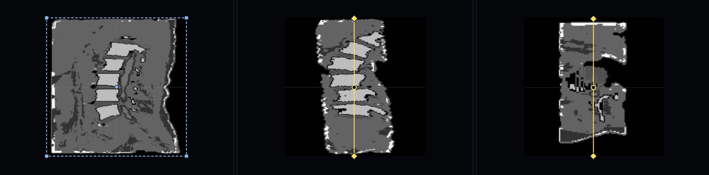
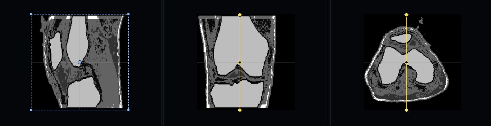

A web-based learning platform for MRI physics, sequence weighting, image reconstruction, and protocol planning. Learn how RF pulses and magnetic gradients transform water protons into clinical diagnostic images.

Select a learning path to practice MRI scanning and physics principles:
 Physics Engine
Physics Engine
Adjust TR, TE, TI, and flip angle parameters. Observe how k-space lines fill and how image contrast changes immediately.
Learn Simulator Basics
Console PracticeWork like a clinical MRI technologist: prescribe slices on 3-plane scouts (Axial, Sagittal, Coronal) and configure acquisition queues.
View Protocols Self Assessment
Self Assessment
Test your diagnostic and physics skills. Identify sequence types, image weighting (T1, T2, PD), and common artifacts.
Start Quiz Structured Learning
Structured Learning
Follow a step-by-step curriculum from basic magnetic resonance principles up to advanced clinical pulse sequences and safety.
Browse LessonsMRI acquisition allows direct multi-planar slicing without moving the patient:
Standard head protocol showing ventricles, cortical grey matter, and white matter tracks.
Vertebral bodies, intervertebral discs, and spinal cord canal evaluation.

Evaluation of anterior cruciate ligament (ACL), meniscus, and articular cartilage.
Image contrast in MRI depends on the timing of RF pulses and signal readouts. Here is a basic overview of how tissues appear across standard weightings:
| Tissue Type | T1-Weighted (Short TR, Short TE) | T2-Weighted (Long TR, Long TE) | Proton Density (Long TR, Short TE) |
|---|---|---|---|
| Fat | Bright (High signal) | Intermediate / Bright | Bright |
| Water / CSF | Dark (Low signal) | Very Bright (High signal) | Intermediate / Dark |
| White Matter | Bright (Light gray) | Dark (Dark gray) | Dark gray |
| Gray Matter | Dark (Medium gray) | Bright (Light gray) | Light gray |
| Bone / Air | Dark (Signal void) | Dark (Signal void) | Dark (Signal void) |
Check our comprehensive MRI Reference Library for explanations of technical terms, sequence equations, artifacts, and safety guidelines.
Open Reference Library →